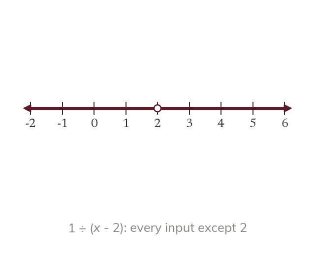
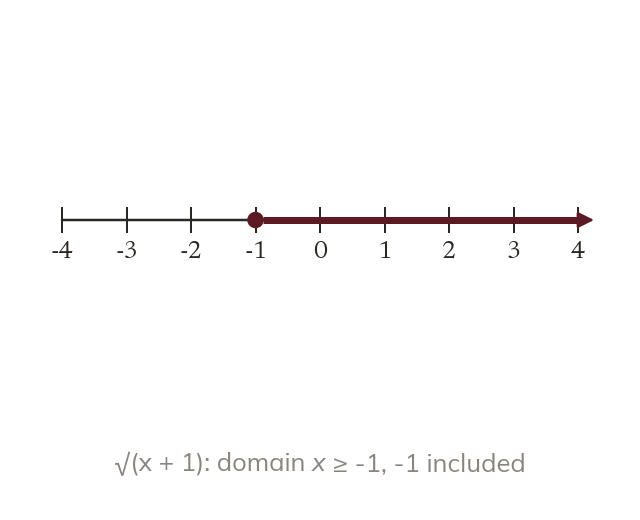
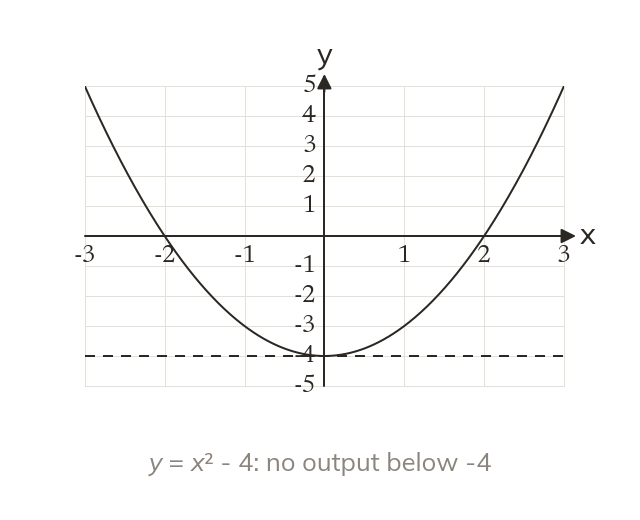
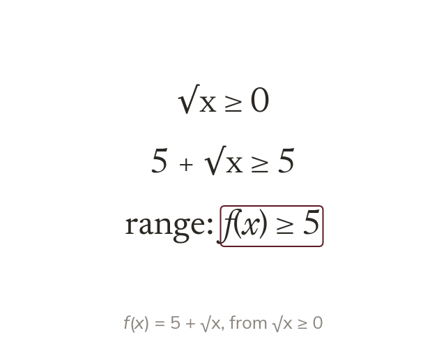

Inputs a rule cannot use
The domain is the set of inputs a function may take. A denominator cannot be 0, so that input is excluded.
A calculator shows an error for √(-4) or 1 ÷ 0, because some inputs cannot be used. Today we find which inputs a function accepts, and which outputs it can ever give.
Work down the page at your own pace. Write every answer in your book first, then click to check it.
Read each card, then follow the worked examples one step at a time.

The domain is the set of inputs a function may take. A denominator cannot be 0, so that input is excluded.

A square root cannot take a negative number. So √(x + 1) needs x + 1 ≥ 0, giving x ≥ -1.
Pick an answer. If it's wrong, the feedback tells you which mistake it was.
Read each card, then follow the worked examples one step at a time.

The range is the set of outputs a function gives. Since x² ≥ 0, x² - 4 gives f(x) ≥ -4.

Start from the smallest value of the square or the root. Then follow it through the rule.
Pick an answer. If it's wrong, the feedback tells you which mistake it was.
Finished? Next lesson: 11H.9.3 Range on a Limited Domain.
Log in, then search for a code to practise that skill.
Videos, worksheets and more on each part of this lesson.